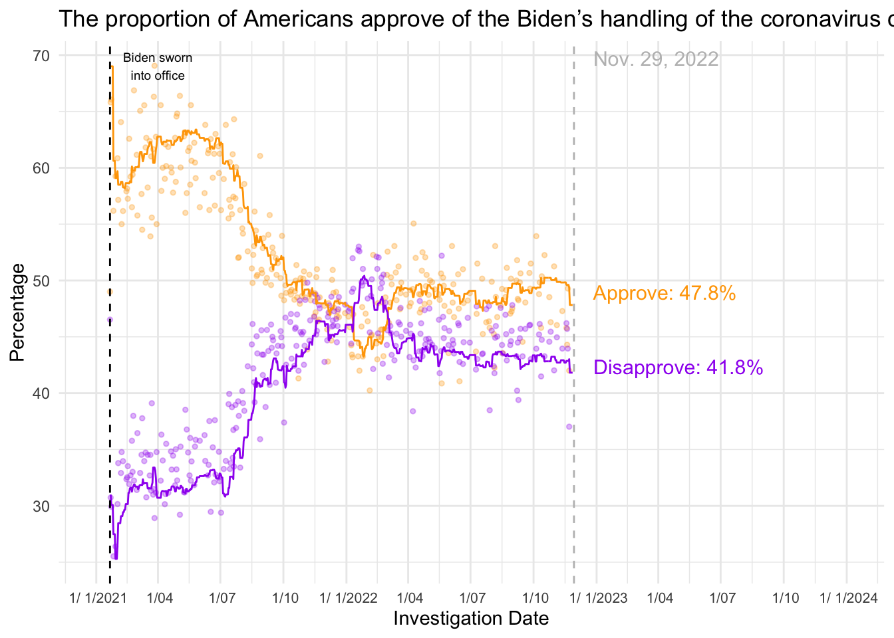

Placeholder file for the future data/results presentation exercise.
Data and graph Description
The data from FiveThirtyEight was generated from survey did by different pollsters to reveal how Americans view Trump and Biden’s response to the coronavirus crisis. The four graphs indicate their approval rate to Biden’s response to COVID crises generally and widely by party, as well as their concerns about the coronavirus’s effect especially in economy.
load packages
library(ggplot2)library(here)
here() starts at /Users/XylemHu/Desktop/EPID8060E/GitHub/xueyanhu-MADA-portfolio
library(dplyr)
Attaching package: 'dplyr'
The following objects are masked from 'package:stats':
filter, lag
The following objects are masked from 'package:base':
intersect, setdiff, setequal, union
First I asked chatGPT to generate a similar line graph together with points. It gave me feedback as follow.
ggplot(data, aes(x = enddate)) + geom_line(aes(y = approve_adjusted, color = “approve”)) + geom_line(aes(y = disapprove_adjusted, color = “disapprove”)) + geom_point(aes(y = approve_adjusted, color = “approve”), size = 3, shape = 16) + geom_point(aes(y = disapprove_adjusted, color = “disapprove”), size = 3, shape = 16) + labs(title = “The proportion of Americans approve of the president’s handling of the coronavirus outbreak”, x = “Investigation Time”, y = “Percentage”) + scale_color_manual(values = c(“approve” = “orange”, “disapprove” = “purple”)) + theme_minimal()
But the result seemed wired. One was that so many points and lines were overlapped and nothing can be seen clearly. The other was that since the geom_line function just connecting the points simply without any adjustment like broken line graph, but the line on the figure is slightly smooth curve. I asked for fixing the problems by replacint with geom_smooth function and found that the reason for the overlapping was that there were some surveys made in the same day. So I also averaged the percentages from the same day and used the new numbers for the scatterplot.
But to be honest, I still cannot figure out how I can make the plot wider so that it will look more like the original graph.
# for figure 1# Convert the date column to Date typedata$enddate <-as.Date(data$enddate, format ="%m/%d/%Y")data1$modeldate <-as.Date(data1$modeldate, format ="%m/%d/%Y")class(data$enddate)
[1] "Date"
class(data1$modeldate)
[1] "Date"
str(data)
'data.frame': 1626 obs. of 19 variables:
$ subject : chr "Biden" "Biden" "Biden" "Biden" ...
$ modeldate : chr "11/27/2022" "11/27/2022" "11/27/2022" "11/27/2022" ...
$ party : chr "D" "D" "D" "D" ...
$ startdate : chr "1/24/2021" "1/28/2021" "1/29/2021" "1/31/2021" ...
$ enddate : Date, format: "2021-01-26" "2021-02-01" ...
$ pollster : chr "YouGov" "Quinnipiac" "Morning Consult" "YouGov" ...
$ grade : chr "B+" "A-" "B" "B+" ...
$ samplesize : num 477 333 808 484 564 ...
$ population : chr "a" "a" "rv" "a" ...
$ weight : num 0.629 0.632 0.834 0.549 0.888 ...
$ influence : num 0 0 0 0 0 0 0 0 0 0 ...
$ multiversions : chr "" "" "" "" ...
$ tracking : logi NA NA NA NA NA NA ...
$ approve : num 84 93 89 88 89.2 ...
$ disapprove : num 3 5 7 7 7.14 8 5 5 2 3 ...
$ approve_adjusted : num 87.1 90.9 90.8 91.1 89.8 ...
$ disapprove_adjusted: num 2.6 6.4 5.9 6.6 6.65 ...
$ timestamp : chr "02:31:11 27 Nov 2022" "02:31:11 27 Nov 2022" "02:31:11 27 Nov 2022" "02:31:11 27 Nov 2022" ...
$ url : chr "https://docs.cdn.yougov.com/ld46rgtdlz/econTabReport.pdf" "https://poll.qu.edu/national/release-detail?ReleaseID=3688" "https://assets.morningconsult.com/wp-uploads/2021/02/03074817/2101110_crosstabs_POLITICO_RVs_v1.pdf" "https://docs.cdn.yougov.com/460mactkmh/econTabReport.pdf" ...
summary(data)
subject modeldate party startdate
Length:1626 Length:1626 Length:1626 Length:1626
Class :character Class :character Class :character Class :character
Mode :character Mode :character Mode :character Mode :character
enddate pollster grade samplesize
Min. :2021-01-21 Length:1626 Length:1626 Min. : 55.0
1st Qu.:2021-06-24 Class :character Class :character 1st Qu.: 387.8
Median :2021-11-10 Mode :character Mode :character Median : 513.0
Mean :2021-11-21 Mean : 762.1
3rd Qu.:2022-04-18 3rd Qu.: 1000.0
Max. :2022-11-22 Max. :21079.0
population weight influence multiversions
Length:1626 Min. :0.1164 Min. :0.00000 Length:1626
Class :character 1st Qu.:0.4904 1st Qu.:0.00000 Class :character
Mode :character Median :0.6668 Median :0.00000 Mode :character
Mean :0.7660 Mean :0.01213
3rd Qu.:0.8480 3rd Qu.:0.00000
Max. :2.8211 Max. :1.79298
tracking approve disapprove approve_adjusted
Mode:logical Min. : 5.00 Min. : 1.00 Min. : 8.308
NA's:1626 1st Qu.:35.00 1st Qu.:27.00 1st Qu.:37.469
Median :48.00 Median :43.00 Median :49.544
Mean :50.88 Mean :42.15 Mean :52.143
3rd Qu.:68.00 3rd Qu.:56.00 3rd Qu.:65.804
Max. :98.00 Max. :92.00 Max. :96.815
disapprove_adjusted timestamp url
Min. : 1.059 Length:1626 Length:1626
1st Qu.:27.441 Class :character Class :character
Median :43.204 Mode :character Mode :character
Mean :41.965
3rd Qu.:54.721
Max. :89.173
# Group by date and calculate the average value for each datedata_avg <- data %>%group_by(enddate) %>%summarize(approve_adjusted_avg =mean(approve_adjusted, na.rm =TRUE),disapprove_adjusted_avg =mean(disapprove_adjusted, na.rm =TRUE))data1_biden <- data1 %>%filter(subject =="Biden"& modeldate >as.Date("2021-01-01"), party =="all")p1 <-ggplot() +geom_point(data = data_avg, aes(x = enddate, y = approve_adjusted_avg, color ="orange"), size =1, alpha =0.3) +geom_point(data = data_avg, aes(x = enddate, y = disapprove_adjusted_avg, color ="purple"), size =1, alpha =0.3) +geom_line(data = data1_biden, aes(x = modeldate, y = approve_estimate), color ="orange", method ="loess", se =FALSE) +geom_line(data = data1_biden, aes(x = modeldate, y = disapprove_estimate), color ="purple", method ="loess", se =FALSE) +labs(title ="The proportion of Americans approve of the Biden’s handling of the coronavirus outbreak",x ="Investigation Date",y ="Percentage") +# Set breaks and labels for quarters (1st of Jan, April, July, Oct)scale_x_date(breaks =seq(as.Date("2021-01-01"), as.Date("2024-12-31"), by ="quarter"), # Breaks every quarter# Label format with month number-year for years where Jan 1st is a breaklabels =function(x) {ifelse(format(x, "%m-%d") =="01-01", format(x, "%e/%e/%Y"), format(x, "%e/%m")) },limits =c(as.Date("2021-01-01"), as.Date("2024-01-01")) ) +scale_color_manual(values =c("orange", "purple")) +theme_minimal() +guides(color =FALSE) +# Remove the color legendannotate("text", x =max(data_avg$enddate) +140, y =max(data_avg$approve_adjusted_avg) -22, label ="Approve: 47.8%", color ="orange", size =4, vjust =-1) +# Adjusted y coordinateannotate("text", x =max(data_avg$enddate) +160, y =max(data_avg$disapprove_adjusted_avg) -10, label ="Disapprove: 41.8%", color ="purple", size =4, vjust =1) +# Adjusted y coordinategeom_vline(xintercept =as.numeric(as.Date("2021-01-21")), linetype ="dashed", color ="black") +# Vertical linegeom_vline(xintercept =as.numeric(as.Date("2022-11-29")), linetype ="dashed", color ="grey") +# Vertical line for Nov 29, 2022annotate("text", x =as.Date("2021-01-21") +70, y =max(data_avg$approve_adjusted_avg), label ="Biden sworn\ninto office", color ="black", size =2.5, vjust =+0.5) +# Annotation for the vlineannotate("text", x =as.Date("2022-11-29") +120, y =max(data_avg$approve_adjusted_avg), label ="Nov. 29, 2022", color ="grey", size =4, vjust =0) +# Annotation for Nov 29, 2022 with x-offsettheme(axis.text.x =element_text(size =8)) # Adjust x-axis text size
Warning in geom_line(data = data1_biden, aes(x = modeldate, y =
approve_estimate), : Ignoring unknown parameters: `method` and `se`
Warning in geom_line(data = data1_biden, aes(x = modeldate, y =
disapprove_estimate), : Ignoring unknown parameters: `method` and `se`
Warning: The `<scale>` argument of `guides()` cannot be `FALSE`. Use "none" instead as
of ggplot2 3.3.4.
plot(p1)

And the original graph is showed below.
# for figure 2data1_trump <- data1 %>%filter(subject =="Trump", party =="all") %>%group_by(modeldate) %>%summarize(approve_estimate_avg =mean(approve_estimate, na.rm =TRUE),disapprove_estimate_avg =mean(disapprove_estimate, na.rm =TRUE))p2 <-ggplot() +geom_line(data = data1_trump, aes(x = modeldate, y = approve_estimate_avg), color ="orange", method ="loess", se =FALSE) +geom_line(data = data1_trump, aes(x = modeldate, y = disapprove_estimate_avg), color ="purple", method ="loess", se =FALSE) +labs(title ="The proportion of Americans approve of the Trump’s handling of the coronavirus outbreak",x ="Investigation Date",y ="Percentage") +scale_x_date(breaks =seq(as.Date("2020-02-15"), as.Date("2021-01-19"), by ="1 month"),labels =date_format("%m-%Y"),limits =c(as.Date("2020-02-15"), as.Date("2021-01-19")) ) +scale_color_manual(values =c("orange", "purple")) +theme_minimal() +theme(axis.text.x =element_text(size =7)) +# Adjust the character size heregeom_vline(xintercept =as.numeric(as.Date("2020-02-29")), linetype ="dashed", color ="black") +# First vlinegeom_vline(xintercept =as.numeric(as.Date("2020-05-28")), linetype ="dashed", color ="black") +# Second vlinegeom_vline(xintercept =as.numeric(as.Date("2020-10-02")), linetype ="dashed", color ="black") +# Third vlinegeom_vline(xintercept =as.numeric(as.Date("2020-11-07")), linetype ="dashed", color ="black") +# Fourth vlinegeom_vline(xintercept =as.numeric(as.Date("2021-01-19")), linetype ="dashed", color ="black") +# Fifth vlineannotate("text", x =as.Date("2020-02-29") +16, y =max(data1_trump$approve_estimate_avg), label ="First U.S.\ndeath\nreported", color ="black", size =2.5, vjust =-1.2) +# Annotation for first vlineannotate("text", x =as.Date("2020-05-28") +18, y =max(data1_trump$approve_estimate_avg), label ="U.S. death\nsurpass\n100,000", color ="black", size =2.5, vjust =-1.2) +# Annotation for second vlineannotate("text", x =as.Date("2020-10-02") -18, y =max(data1_trump$approve_estimate_avg), label ="Trump\ndiagnosed\nwith\nCOVID-19", color ="black", size =2.5, vjust =-0.6) +# Annotation for third vlineannotate("text", x =as.Date("2020-11-07") +15, y =max(data1_trump$approve_estimate_avg), label ="Biden\ndeclared\nelection\nwinner", color ="black", size =2.5, vjust =-0.6) +# Annotation for fourth vlineannotate("text", x =as.Date("2021-01-19") -15, y =max(data1_trump$approve_estimate_avg), label ="Biden\nsworn into\noffice", color ="black", size =2.5, vjust =-1.2) # Annotation for fifth vline
Warning in geom_line(data = data1_trump, aes(x = modeldate, y =
approve_estimate_avg), : Ignoring unknown parameters: `method` and `se`
Warning in geom_line(data = data1_trump, aes(x = modeldate, y =
disapprove_estimate_avg), : Ignoring unknown parameters: `method` and `se`
data_table <- data1 %>%filter(party !="all") %>%group_by(party, subject) %>%summarize(avg_approve =mean(approve_estimate, na.rm =TRUE),avg_disapprove =mean(disapprove_estimate, na.rm =TRUE),.groups ="drop"# Add this line to drop the grouping )print(data_table)
# A tibble: 6 × 4
party subject avg_approve avg_disapprove
<chr> <chr> <dbl> <dbl>
1 D Biden 85.4 11.0
2 D Trump 10.3 86.6
3 I Biden 47.5 43.5
4 I Trump 36.3 56.6
5 R Biden 21.9 73.0
6 R Trump 79.0 17.8